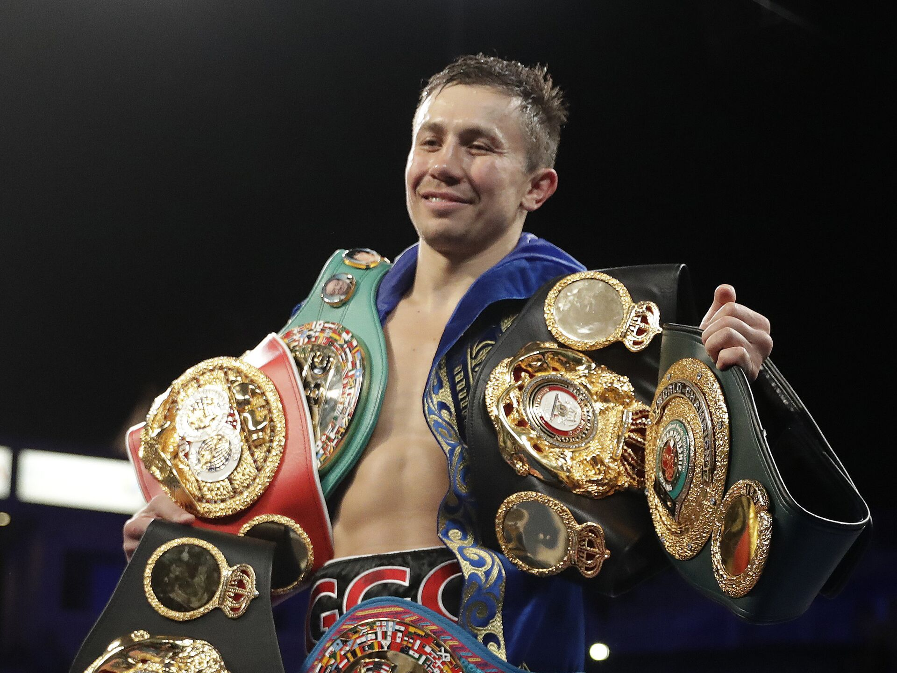

About Gennady Golovkin
Gennady Gennadyevich Golovkin (born 1982) is a Kazakhstani professional boxer.
He is a former unified middleweight world champion, holding multiple titles between 2010 and 2022.
Widely regarded as one of the greatest middleweight boxers of all time, Golovkin is known for his powerful punching and technical skills.
Life Events
- 2003 – Won gold medal at the World Amateur Boxing Championships.
- 2004 – Represented Kazakhstan at the Athens Olympics, winning silver.
- 2010 – Won the WBA middleweight world title.
- 2017 – Fought Canelo Álvarez in one of boxing’s biggest events.
- 2022 – Unified middleweight champion, recognized globally.
Key Achievements
- Former WBA, WBC, IBF, and IBO Middleweight Champion.
- Record for most title defenses in middleweight division.
- Olympic silver medalist (2004).
- Nicknamed “Triple G” for his dominant style.